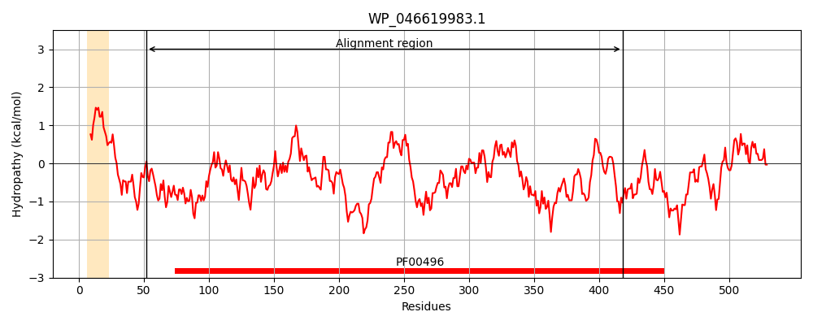
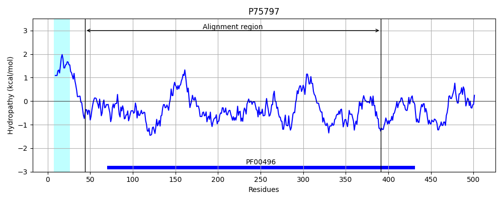
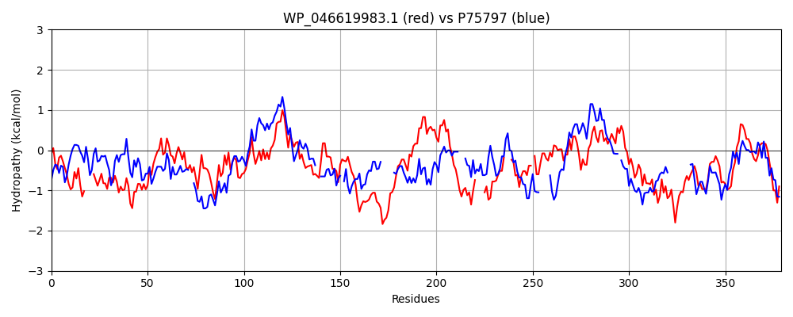

Hit Accession: P75797
Hit TCID: 3.A.1.5.11
Hit Description: gnl|BL_ORD_ID|11410 gnl|TC-DB|P75797|3.A.1.5.11 Putative binding protein yliB precursor - Escherichia coli.
Mach Len: 379
e:0.000000
Query TMS Count : 1
Hit TMS Count: 1
TMS-Overlap Score: 0.450000
Predicted Substrates:CHEBI:5437;glutathione
BLAST Alignment:
Score: 300 , Bit scores: 120 bits, E-value: 4.6e-29, Alignment length: 379, Percentage identity: 28
Query: 52 YPNGGILNQITDKLTWQN----PKTLEIEPWIAESWTSNADKTEYTFHLRKGVTFSDSTPLDAAAVAKNFDTYGLGDKAHRLPVSEVINNYQRSEVIDPLTVKFYFNKPSPGFLQGTATIGSGLVSLSTLQRNFEELGDARHIIGSGPFVVQDEKPGRELTLVARKDYQWGPKNSAQQGPANLDGITYIVTPEDSVRIGALLAGQAGFIRQVQAYDEKQAT----DQGFKVYAAPT---RGVNDSLSFRP-DNPLVADLRVRQALLHATNAKQVVETLFSANYPQATSVLASSAAGYVNLSDKLTFDQAKARQLLDDAGWKPDADGIRSKDGQRLALTVYESLPQPQNKEVLQLIAQQWRQVGVALTVKAGDAGSRTLD 418
Y L+Q K +Q K ++++ +AES+T + D YT LR+G+ F D T +AAAV N D D A+ L + N ++E IDP TVK +P F+ A + ++S + L++ +E+G + +G+GP+ + D + V + W P G LD IT+ +++ R L G+A F + +QAT ++ ++ A+P+ R ++ +++ +P DNP +VR+AL +A N +V+ F+ AT V+ S A Y +D KAR+LL +AG+ + T++ S ++VLQ QQ QVG+ V A DAG R +
Sbjct: 44 YDANDTLSQAVAKSFYQGLFGLDKEMKLKNVLAESYTVSDDGITYTVKLREGIKFQDGTDFNAAAVKANLDR--ASDPANHLKRYNLYKNIAKTEAIDPTTVKITLKQPFSAFINILAHPATAMISPAALEKYGKEIG--FYPVGTGPYEL-DTWNQTDFVKVKKFAGYWQP------GLPKLDSITWRPVADNNTRAAMLQTGEAQFAFPI---PYEQATLLEKNKNIELMASPSIMQRYISMNVTQKPFDNP-----KVREALNYAINRPALVKVAFAGYATPATGVVPPSIA-YAQSYKPWPYDPVKARELLKEAGYP-----------NGFSTTLWSSHNHSTAQKVLQFTQQQLAQVGIKAQVTAMDAGQRAAE 391 | Protein Hydropathy Plots: |
|---|
|  |  |
Pairwise Alignment-Hydropathy Plot:
|
|---|
|  |